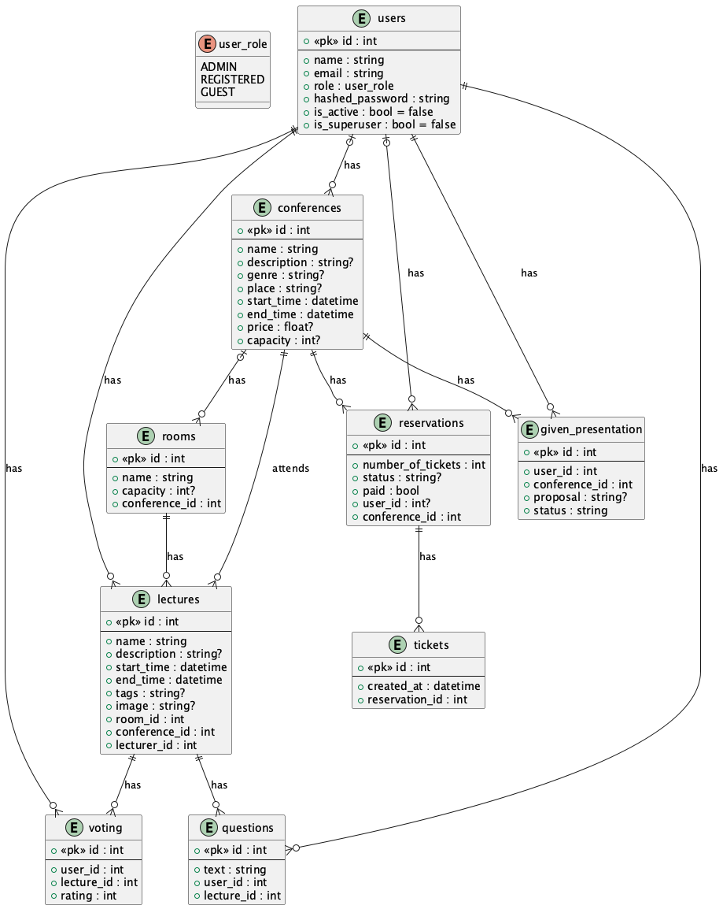

Konference
- Autoři
- Jiří Bartošíkk xbarto0m@vutbr.cz - řízení koordinace, dokumentace, návrh
- Robert Blažek xblaze39@vutbr.cz - řízení tvorby FE
- Petr Stahl xstahl01@vutbr.cz - řízení tvorby BE
- URL aplikace
- http://konference.rblazek.cz
Uživatelé systému pro testování
| Login | Heslo | Role |
|---|
| admin | admin | ADMIN |
| NIL | NIL | REGISTERED |
| NIL | NIL | GUEST |
TODO
Diagram případů užití dle zadaní... má limity je jen pohled vysvetlit...
TODO
Video
Viz old.html a zadani, hlavne se zamerit na UC. youtube.com
TODO
Implementace
Viz old.html odkazy na soubory co je kde imlementovane. Bonus technologie a odkzy na github.
TODO
Databáze

Instalace
- 1. postup instalace na server...
- 2. softwarové požadavky (verze apod...)
- 3. jak rozbalit, konfigurovat, inicializovat databázi...
TODO
Známé problémy
Žádné.